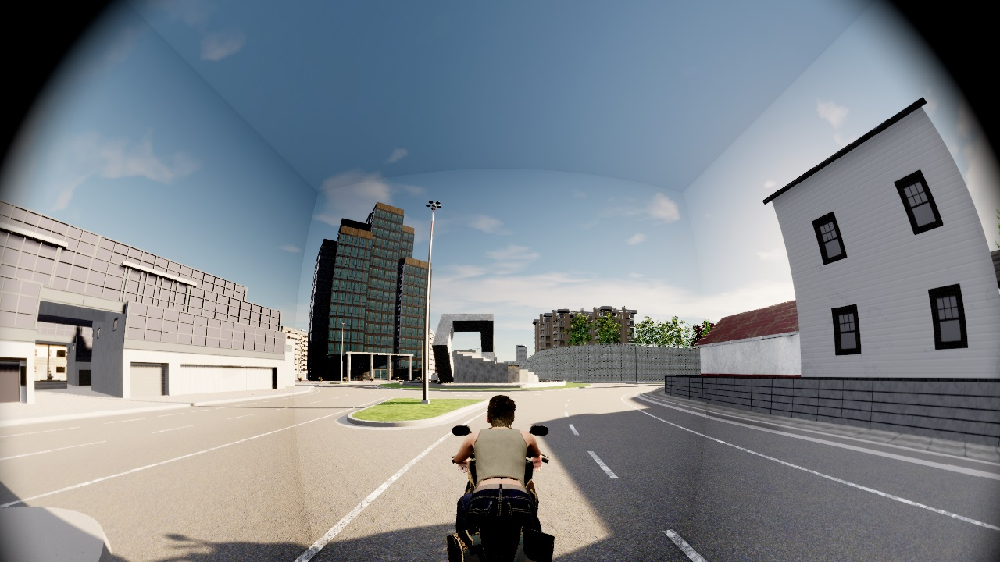
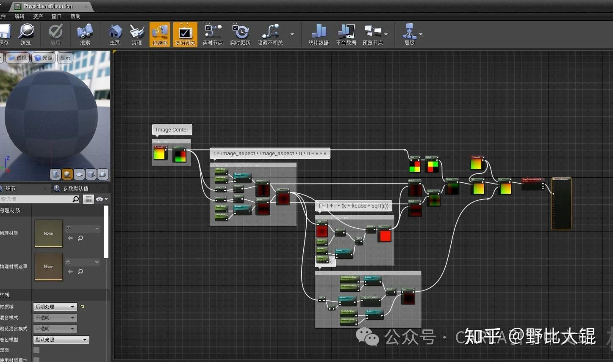
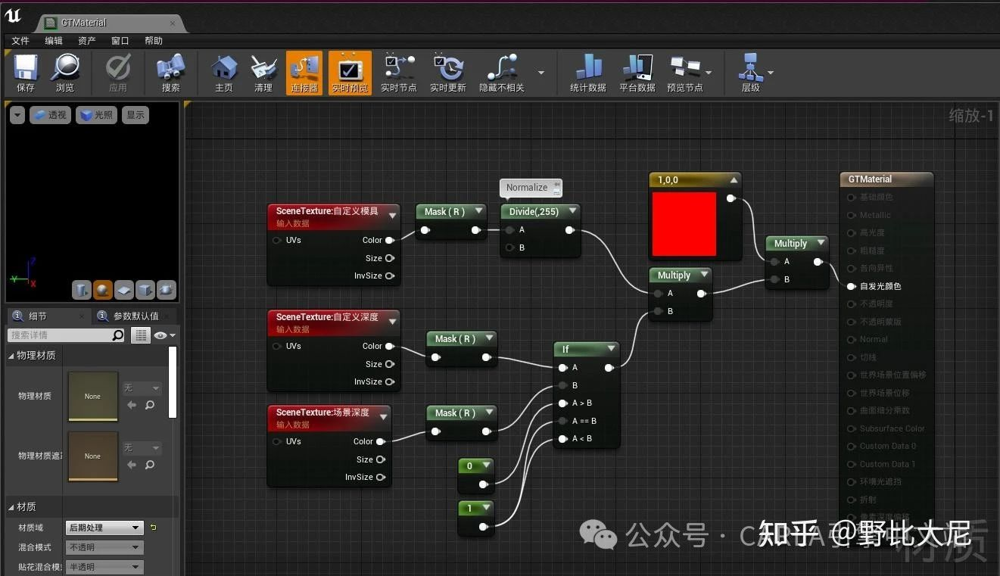

传感器
本文主要是简述了在使用Carla过程中遇到的关于传感器的一些常见问题。
1、Carla有没有鱼眼摄像头？
答：有，在 Carla的PullRequest中 传了鱼眼传感器。并且在issues和pullrequets中已经形成了比较完整的代码bug修复编译过程，主要是适配UE4.26的代码。 
2、Carla有没有鱼眼的语义分割或实例分割传器？
答：可以实现，虽然没注意issues里有没有实现方式。但了解普通RGB和语义分割传感器的知道，这个其实是后处理材质的功劳。
3、为什么一个Carla多个摄像头显卡还是利用率很低？
答：小编分析这个是多个SceneCapture其实是轮流进入渲染队列的。在底层RHI（渲染硬件接口）线程并不能并行执行渲染任务。这个问题应该限制在UE侧。
4、Carla什么时候迁移UE5？
答：现在Carla Github中已有UE5.x的版本。小编认为UE5的渲染效果并不能解决渲染不真的问题，也不能解决渲染性能的问题。当然，“有更好的用更好的”的出发点没啥问题。但高渲染画质伴随着高性能消耗的定律是不会变的。
5、传感器Listen的时候，总是卡死，内存爆炸
答：Carla的数据流基于TCP，一般是在listen()调用的Callback函数运行时间较长。Carla服务端在疯狂从Buffer Pool申请新的内存，在网络端堵塞。这个问题通常在单个传感器产生的数据量很大，而且还高频产出的情况下出现，如果是异步模式，那出现频率更高。
解决办法：优化Python脚本，写个异步处理。
6、Carla 传感器出现眩光
答：一般这种情况会先出现显存不够用的Warning，然后就爆炸了。通常使用大显存可以减少这个问题出现的概率。

7、Carla自带的畸变模型怎么用？
答：参考SynthEyes' lens-distortion畸变算法 和 SynthEyes' lens-distortion畸变算法原理 。当然可以去看实现它的后处理材质蓝图PhysicLensDistortion。

8、Carla能不能实现其他畸变模型？
答：会搞后处理材质蓝图，就可以自定义任何畸变模型。
9、实例分割和语义分割区别在哪？
答：与语义分割只关注像素级别的语义标签不同，实例分割还要求对同类但不是同一个物体实例进行区分和分割。实例分割输出的RGB图像：R通道是语义分割的结果，GB通道组成实例分割ID，实例分割ID是虚幻引擎下的UniqueID，并非Carla层的Actor ID。用两个通道是出于位数大小考虑。
语意分割输出的RGB图像：基于Tagger设置的自定义深度决定材质的自发光颜色。 语意分割材质：  相关Issue 。
实例分割颜色设置相关代码： ```cpp FLinearColor ATagger::GetActorLabelColor(const AActor &Actor, const crp::CityObjectLabel &Label) { uint32 id = Actor.GetUniqueID();
// TODO: Warn if id > 0xffff. // Encode label and id like semantic segmentation does// TODO: Steal bits from R channel and maybe A channel?
FLinearColor Color(0.0f, 0.0f, 0.0f, 1.0f);
Color.R = CastEnum(Label) / 255.0f; Color.G = ((id & 0x00ff) >> 0) / 255.0f;
Color.B = ((id & 0xff00) >> 8) / 255.0f;return Color; } ```